跨网同步
同一网络自动直连；不在同一网络时，内容端到端加密后经中继转发。公司、家里、手机热点都能接上。
跨设备剪贴板 · Windows / macOS / Linux
跨网络同步、多平台互通：Windows、macOS、Linux 共用一块剪贴板。
文件与文件夹拖进窗口就能发，AI 工具配置可以跨设备对比和同步，
Ctrl+Shift+V 粘贴面板让历史内容一秒回到当前应用。
手机不用装 App，扫码即用。
同一 Wi-Fi自动发现内容加密不经过服务器
界面
同步状态、本机信息、手机扫码、快速设置和快捷操作。
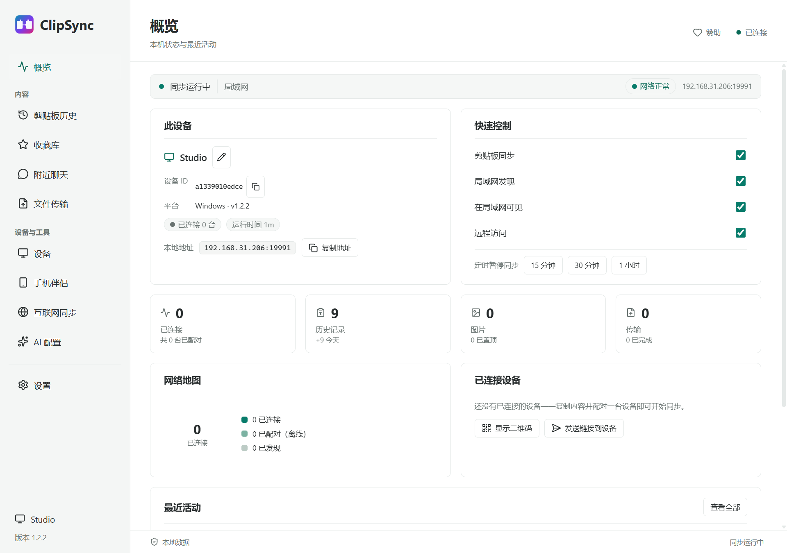
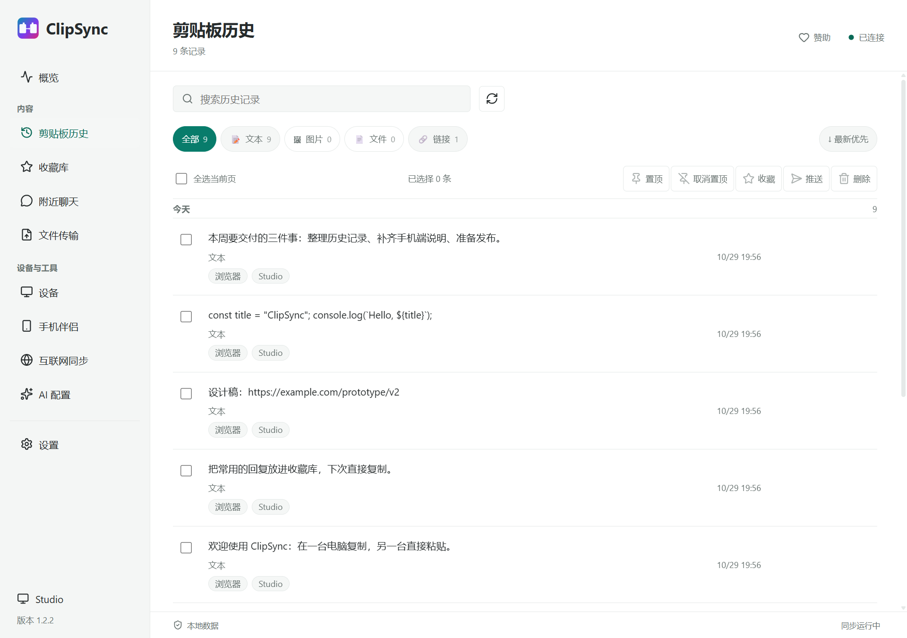
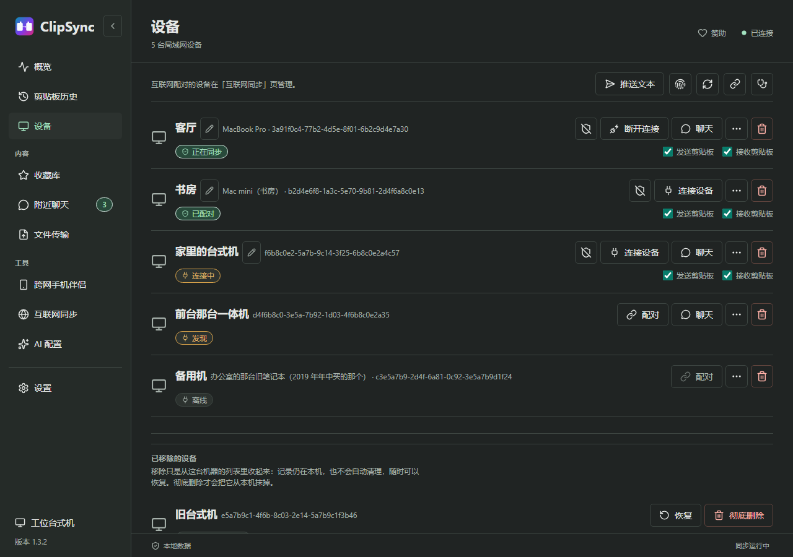
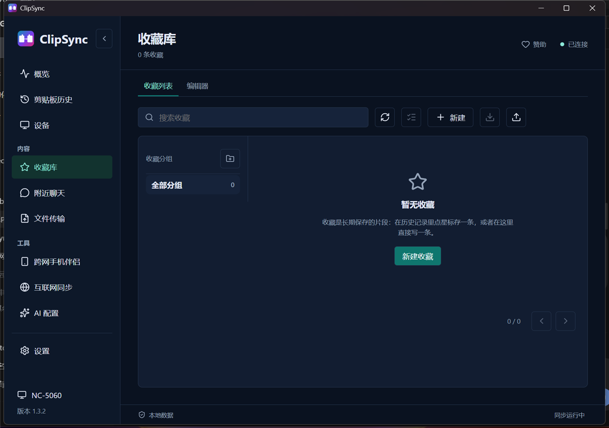
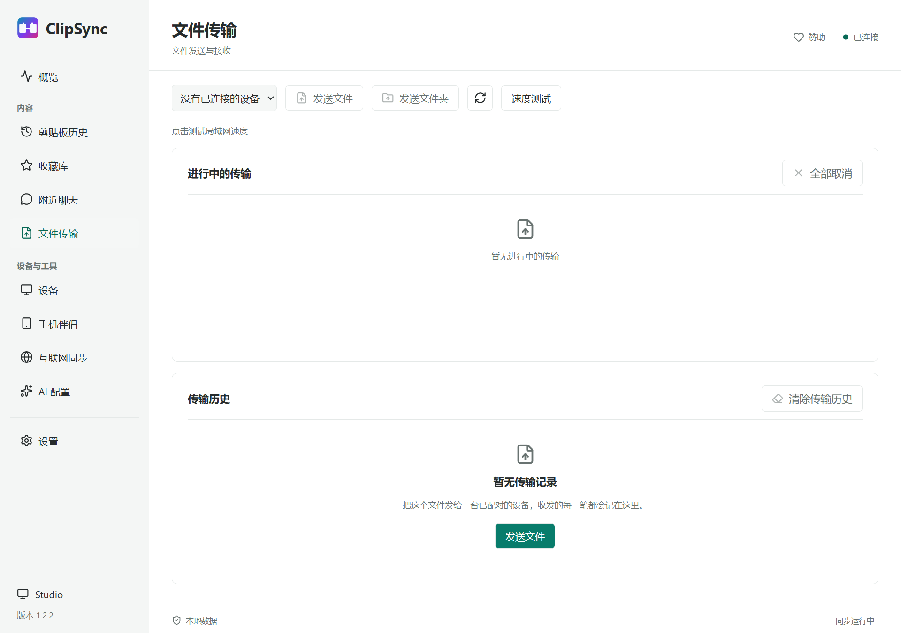
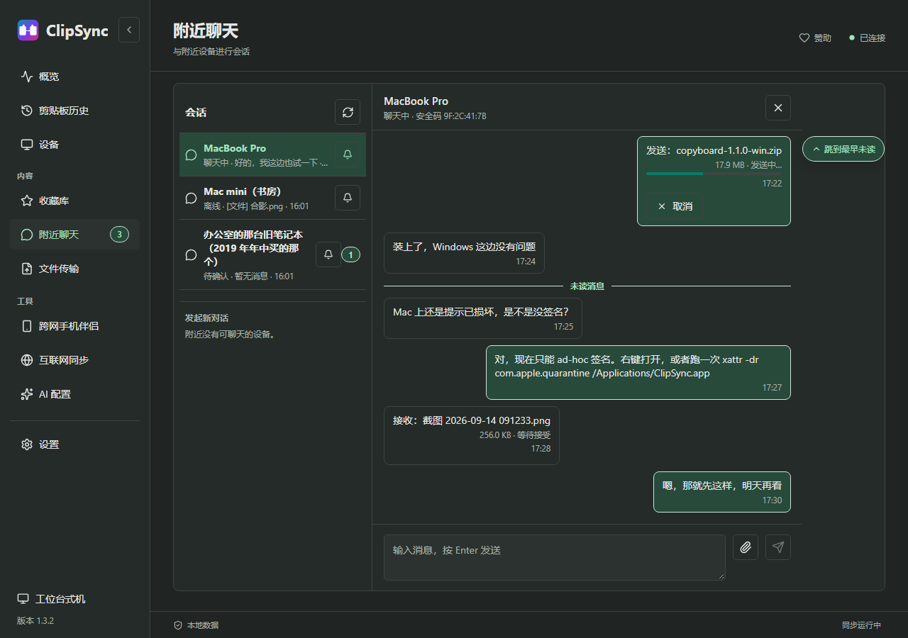
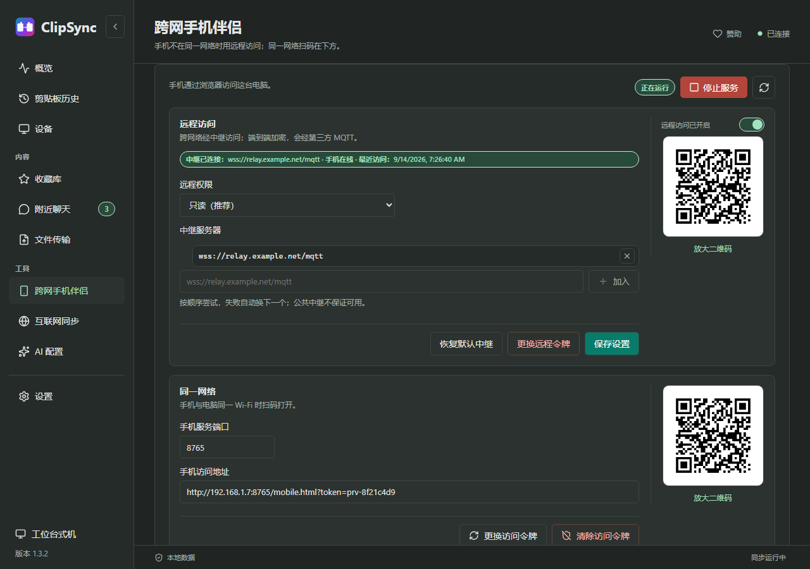
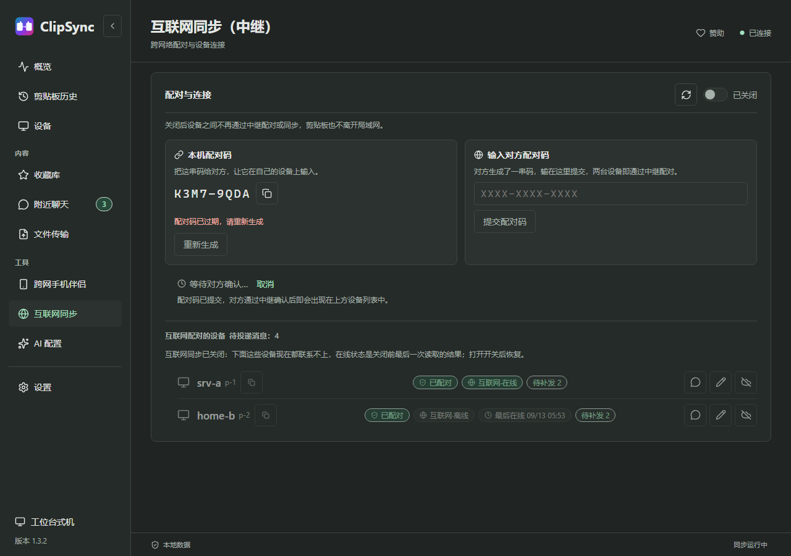
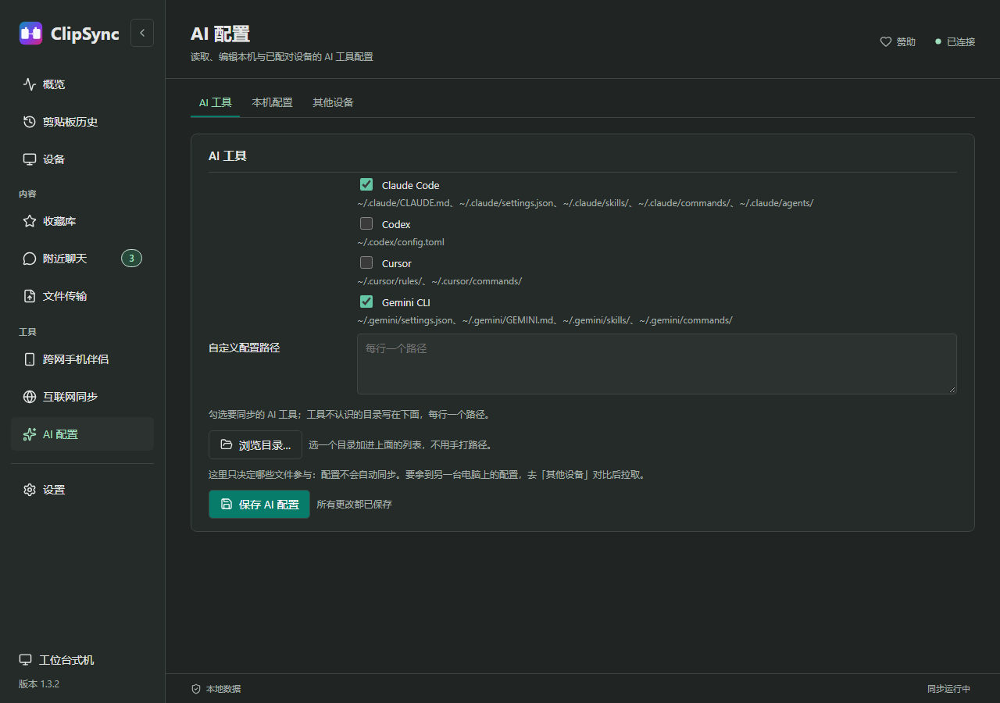
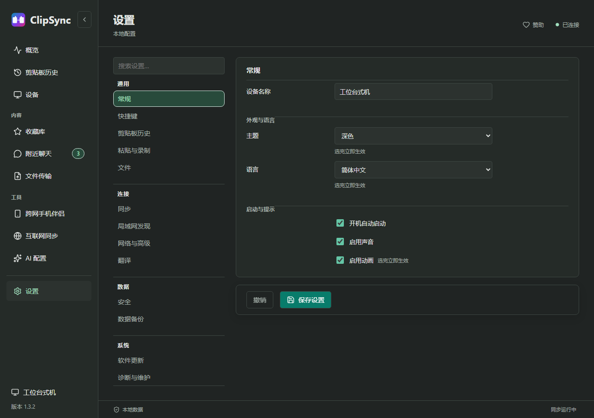
核心能力
不是又一个云盘，也不是给自己发消息。复制、粘贴还是平时的动作，只是不再被设备、系统和网络限制。
同一网络自动直连；不在同一网络时，内容端到端加密后经中继转发。公司、家里、手机热点都能接上。
Windows、macOS、Linux 桌面端互相同步。手机不用装 App，浏览器扫码就能看历史、取内容、传文件。
内置 Claude Code、Codex、Cursor、Gemini CLI、Windsurf、Continue 等配置管理，可跨设备对比，再选择覆盖、另存或合并。
文件和文件夹拖进窗口就能发。文件夹自动打包，接收端粘贴时解压；大文件按需取回，不提前占磁盘。
Ctrl+Shift+V 呼出，输入即搜索，方向键选择，回车直接粘到当前应用；支持纯文本、图片、文件和收藏。
文字、链接、图片、HTML 和文件都能同步；历史可搜索、筛选、收藏，来回复制不会重复。
第一次使用
适用场景
不用改变原来的工作方式：复制、粘贴，和平时一样。
| 场景 | 用法 |
|---|---|
| 办公室和家里的电脑 | 不在同一个网络也能继续同步，内容在设备之间加密传输 |
| 台式机和笔记本之间搬内容 | 同一 Wi-Fi 下自动找到对方，配对一次，之后复制就能用 |
| 手机上取电脑里的内容 | 电脑上显示二维码，手机浏览器扫一下，不用装 App |
| 临时给同事或朋友发文件 | 把文件拖进窗口，选一台设备就能发送；同一局域网里不用先配对 |
| 保存常用回复、地址、代码片段 | 放进收藏库，需要时搜一下就能复制回去 |
| 和旁边的设备临时聊两句 | 同一个 Wi-Fi 下的电脑可以直接聊天、发文件，不用加好友 |
隐私
同一 Wi-Fi 下，电脑之间会直接找到对方；不在同一个网络时，内容会先加密再中转。 两种方式都不需要把内容交给一个云端账号。
[FILTERED]，在设置里选择要遮盖的类型。手机
电脑上会出现一个二维码。手机相机或浏览器扫一下，就能打开同一份剪贴板历史。 在 iOS / Android 上「添加到主屏幕」后，它就像一个小应用一样随手可用。
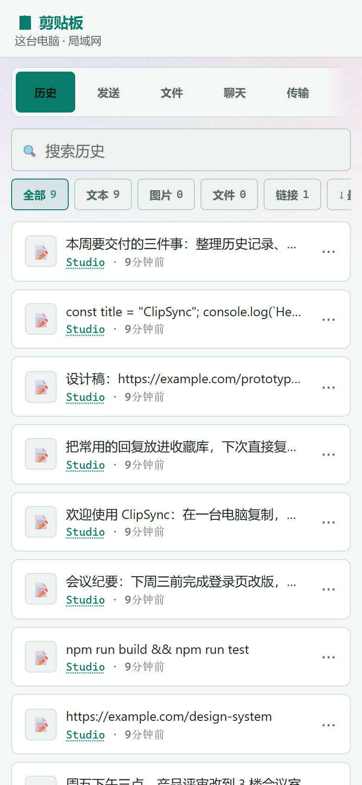
下载 · 最新版本
下载安装后打开就能用。Windows、macOS、Linux 都支持，互相之间也能同步。
Windows 10 / 11 · 64 位
Apple 芯片 / Intel
x86_64 / ARM64
选择适合你的版本，全部由 Cloudflare 提供下载。
问答
不一定。在同一个 Wi-Fi 下最省事，会自动发现对方；不在同一个网络时，打开「互联网同步」也能继续用。
不用。安装后按屏幕提示连接设备即可，没有账号、没有登录步骤。
在同一个 Wi-Fi 下，内容直接在你的设备之间传输。跨网络时会先加密再中转；中转服务只负责转发，不保存内容。
不用。电脑上显示二维码，手机浏览器扫一下就能打开；也可以「添加到主屏幕」，以后像小应用一样使用。
可以。Windows、macOS、Linux 之间都能互相连接、同步剪贴板和发送文件。
会。关闭窗口只是把它收进托盘，剪贴板同步仍然继续。要真正退出，请使用托盘菜单里的「退出」。
不需要。下载对应系统的安装包，安装后打开就能用。
可以在设置里限制保留数量、查看占用空间，也可以清空全部历史。收藏的内容不会被清空。
在 Finder 里右键点击 ClipSync，选择「打开」，再确认一次。如果仍提示已损坏，可在终端执行：xattr -dr com.apple.quarantine /Applications/ClipSync.app，然后重新打开。
个人和非商业用途免费。如果用于公司业务、收费产品或对外服务，需要先获得商业授权。